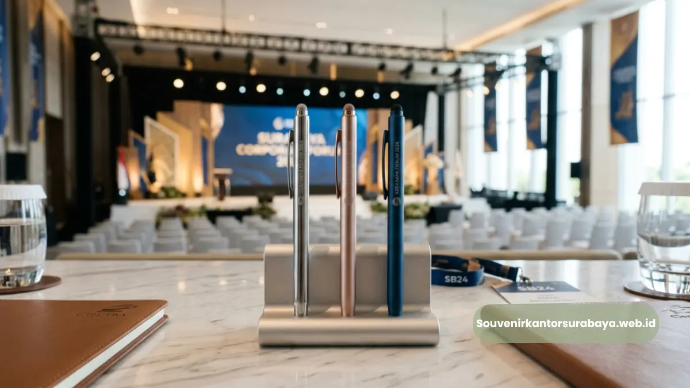
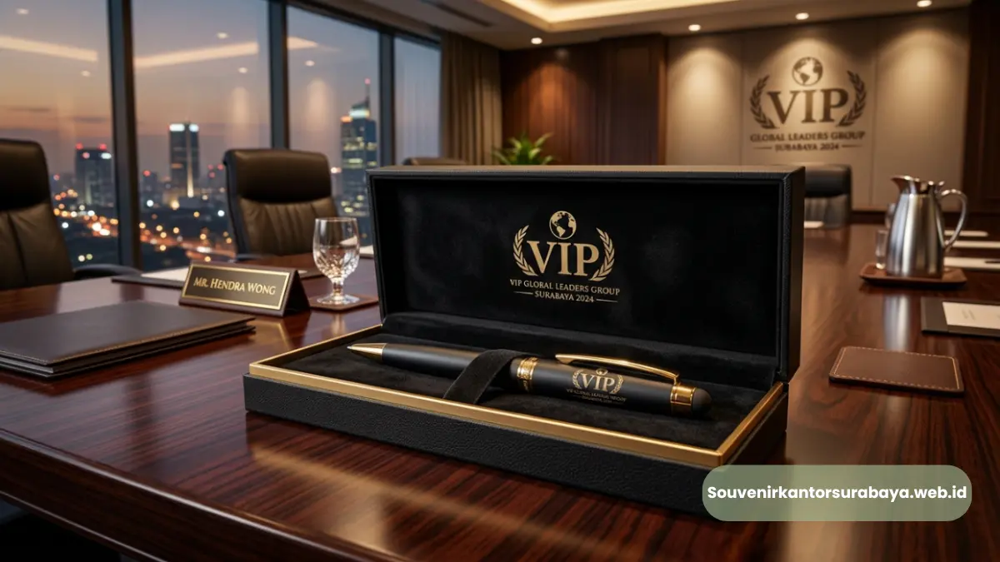
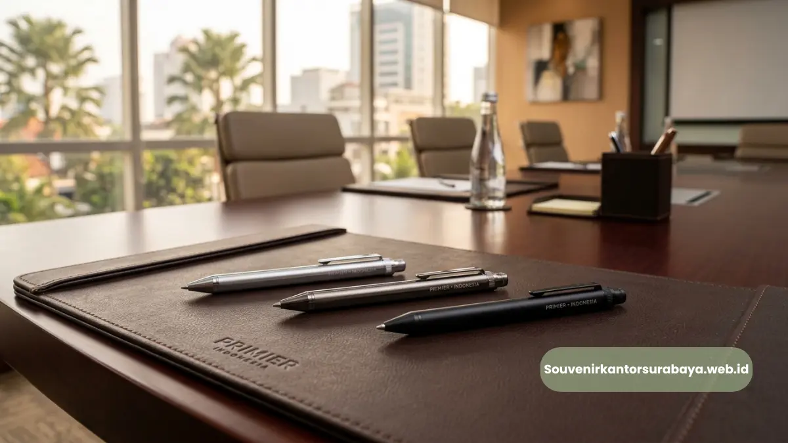
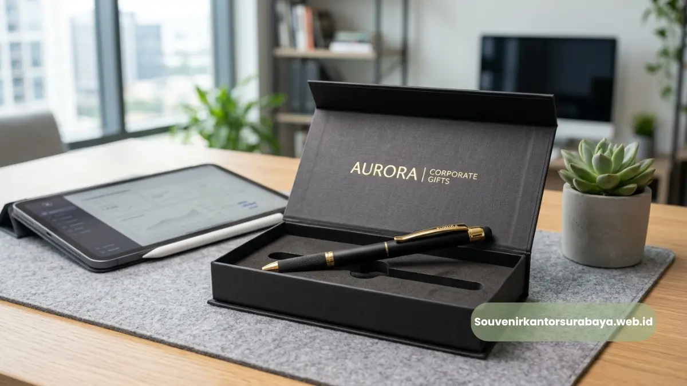
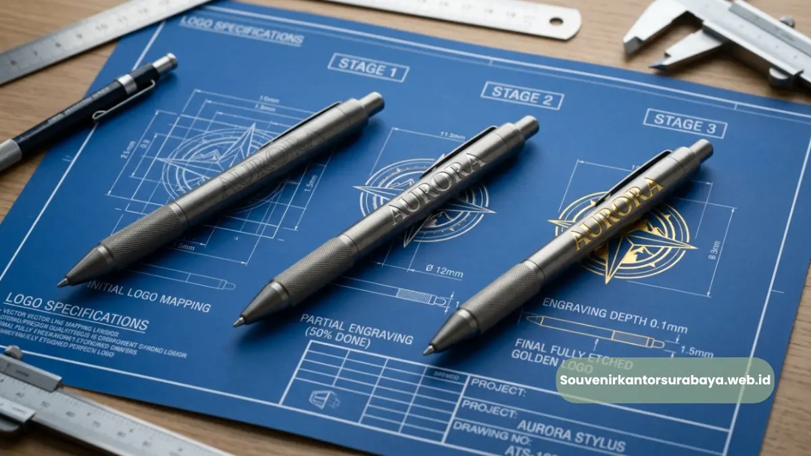

Pulpen metal stylus sebagai souvenir seminar dan gathering bisnis korporat di Surabaya.
- Mengapa Pulpen Metal Stylus Cocok untuk Seminar dan Gathering Bisnis?
- Kapan Waktu Tepat Membagikan Pulpen Metal Stylus di Acara Korporat?
- Bagaimana Memilih Jumlah Pulpen Metal Stylus untuk Event Bisnis di Surabaya?
- Bagaimana Pulpen Metal Stylus Mendukung Kesan Profesional Acara Korporat di Surabaya?
Pulpen metal stylus untuk seminar dan gathering bisnis Surabaya menjadi pilihan souvenir yang tepat karena tampilannya yang formal, fungsi ganda sebagai stylus, dan kepraktisannya dibagikan dalam jumlah banyak. Produk ini cocok digunakan pada berbagai jenis acara korporat, mulai dari seminar skala kecil hingga gathering tahunan perusahaan. Kesesuaiannya dengan kebutuhan acara bisnis formal membuat pulpen metal stylus banyak dipilih perusahaan di Surabaya.
- Pulpen metal stylus cocok untuk seminar, gathering, dan pameran bisnis di Surabaya.
- Tampilan formal produk ini mendukung kesan profesional acara korporat.
- Pembagian pulpen di awal acara meningkatkan durasi penggunaan sepanjang kegiatan.
- Jumlah pemesanan sebaiknya disesuaikan dengan estimasi peserta acara.
- souvenirkantorsurabaya.web.id melayani pemesanan untuk berbagai skala event bisnis.
Mengapa Pulpen Metal Stylus Cocok untuk Seminar dan Gathering Bisnis?
Pulpen metal stylus cocok untuk seminar dan gathering bisnis karena tampilannya yang formal sejalan dengan suasana acara korporat, sekaligus tetap fungsional untuk digunakan peserta selama kegiatan berlangsung. Produk ini juga mudah dipadukan dengan elemen seminar kit lain seperti notes maupun tas jinjing.
Pada acara seminar, peserta umumnya membutuhkan alat tulis untuk mencatat materi, sehingga pulpen metal stylus langsung memiliki fungsi praktis sejak awal acara dimulai. Berbeda dengan souvenir dekoratif yang cenderung disimpan tanpa digunakan, pulpen ini aktif dipakai sepanjang sesi berlangsung.
Pada gathering perusahaan, pulpen metal stylus juga dapat difungsikan sebagai bentuk apresiasi kepada karyawan atau mitra yang hadir, dengan kesan yang lebih personal dibanding souvenir umum lainnya, terutama bila dilengkapi custom logo perusahaan.
Kapan Waktu Tepat Membagikan Pulpen Metal Stylus di Acara Korporat?
Waktu paling tepat membagikan pulpen metal stylus adalah pada saat registrasi awal acara, sehingga peserta dapat langsung menggunakannya untuk mencatat sepanjang sesi seminar atau gathering berlangsung. Pembagian di awal acara membuat durasi pemakaian produk menjadi lebih panjang dibanding dibagikan menjelang acara selesai.

Pulpen metal stylus sebagai souvenir apresiasi tamu VIP dan peserta gathering bisnis.
Beberapa momen yang umum digunakan untuk membagikan pulpen metal stylus pada event bisnis:
- Saat registrasi peserta di meja penerimaan tamu.
- Bersamaan dengan seminar kit lain seperti notes dan tas jinjing.
- Sebagai bagian dari goodie bag pada acara gathering atau pameran.
- Sebagai token apresiasi di sesi penutupan acara korporat.
Pemilihan momen pembagian yang tepat membantu memaksimalkan fungsi pulpen metal stylus, baik dari sisi kepraktisan bagi peserta maupun dari sisi branding bagi perusahaan penyelenggara.
Baca Juga (Artikel Utama & Cluster)
Bagaimana Memilih Jumlah Pulpen Metal Stylus untuk Event Bisnis di Surabaya?
Jumlah pulpen metal stylus sebaiknya disesuaikan dengan estimasi jumlah peserta atau tamu undangan, ditambah cadangan untuk mengantisipasi tamu tambahan yang hadir di luar daftar awal. Perhitungan yang matang menghindarkan perusahaan dari kekurangan maupun kelebihan stok souvenir.
Beberapa pertimbangan dalam menentukan jumlah pemesanan:
- Estimasi jumlah peserta berdasarkan data pendaftaran acara.
- Cadangan tambahan sekitar lima hingga sepuluh persen dari jumlah peserta terdaftar.
- Skala acara, apakah internal perusahaan atau melibatkan tamu eksternal dan mitra bisnis.
- Anggaran yang tersedia untuk kebutuhan souvenir pada acara tersebut.
Perhitungan jumlah yang tepat juga membantu proses produksi berjalan lebih efisien, terutama untuk pesanan custom logo yang membutuhkan waktu produksi sesuai kuantitas pesanan.
Bagaimana Pulpen Metal Stylus Mendukung Kesan Profesional Acara Korporat di Surabaya?
Pulpen metal stylus mendukung kesan profesional acara korporat di Surabaya karena tampilannya yang formal sejalan dengan citra bisnis yang ingin ditonjolkan perusahaan penyelenggara, baik di hadapan klien, mitra, maupun karyawan sendiri. Detail kecil seperti souvenir yang dibagikan turut memengaruhi persepsi keseluruhan acara.
Kesan profesional ini semakin kuat ketika pulpen metal stylus dipadukan dengan elemen acara lain yang senada, seperti seminar kit dengan desain seragam atau souvenir tamu VIP yang lebih eksklusif. Konsistensi tampilan antar elemen acara menciptakan pengalaman yang lebih terstruktur bagi peserta.
Bagi perusahaan di Surabaya yang rutin menyelenggarakan seminar maupun gathering, penggunaan souvenir dengan kualitas konsisten dari waktu ke waktu juga membantu membangun ekspektasi positif peserta terhadap acara-acara berikutnya.

Hawa Nadira
Tim penulis CorporateGifts ID berfokus pada strategi souvenir kantor, merchandise korporat, dan inovasi brand untuk klien B2B.
Keahlian: Branding perusahaan, produksi souvenir, paket event, desain materi promosi.
Artikel Terkait

Vendor Pulpen Metal Stylus Event Bisnis Surabaya
Vendor pulpen metal stylus event bisnis Surabaya menyediakan alat tulis premium berbahan logam dengan ujung stylus untuk layar sentuh.
Baca Selengkapnya
Manfaat Pulpen Metal Stylus untuk Souvenir Event Korporat
Manfaat pulpen metal stylus untuk souvenir event korporat: kesan premium, fungsi ganda alat tulis & stylus, serta daya tahan material.
Baca Selengkapnya
Custom Logo Pulpen Metal Stylus untuk Branding Perusahaan
Custom logo pulpen metal stylus untuk branding perusahaan dikerjakan melalui teknik laser engraving atau cetak UV pada permukaan logam.
Baca Selengkapnya